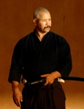
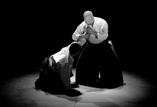
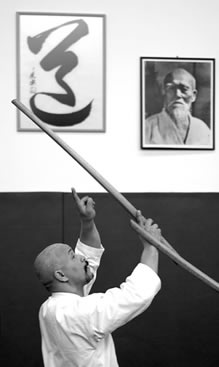

Beszélgetés Jaff Rajival a MITORI GEIKO címû könyv kapcsánAz interjút az Francia AIKIDOKA MAGZINE készítette. Az francia eredeti a www.aikidoka.fr oldalon található. A magyar fordításért köszönet Vincze Gábornak, Hegedûs Annának és Varga Beának Korábban már beszámoltunk egy könyvritkaságról. Ritkaság, hiszen azok közé a mûvek közé tartozik, amelyek megmozgatnak valamit bennünk, és még azután is sokáig érezzük a hatásukat, hogy az utolsó oldalt is befejeztük. Ez a könyv, amely három kifejezési formának az ötvözete, a Mitori Geiko címet viseli, és Jaff Raji, a franciaországi Rennes-ben élõ nemzetközi hírû budóoktató irányításával készült. De ahelyett, hogy megpróbálnánk ügyetlenül bemutatni a mûvet, azt kockáztatva, hogy éppen a lényeget hagyjuk ki, úgy döntöttünk, hogy inkább magát a szerzõt hagyjuk rávilágítani szokásosnak nem mondható életútjára és tanulmányaira, amelyek végül létrehozták benne ezt a nagyfokú érzékenységet és a munkához való fegyelmezett hozzáállást. Aikidoka Magazine: A nemrég megjelent könyvének címe: Mitori Geiko, megfigyelni lényünk teljes intenzitásával. Mi késztette arra, hogy éppen ez legyen a tanításának témája? Jaff Raji: Az intenzív megfigyelést apám nevelte belém gyerekkoromtól fogva, már jóval azelõtt, hogy elkezdtem volna budót gyakorolni. Apám nagyon szigorú követelményeket támasztott. Amikor én és a fiútestvéreim a házi munkában vagy a barkácsolásban segítettünk neki, nem tûrt meg semmiféle figyelmetlenséget. A helyes magatartás az, hogy mindig készek legyünk, hogy a megfelelõ szerszámot nyújtsuk oda a megfelelõ pillanatban, hogy a következõ kérést elõre lássuk és mindent megfigyeljünk, hogy legközelebb egyedül is elvégezhessük a feladatot: ezek voltak a részei egy olyan hozzáállásnak, amelyet magamévá tettem, és amely késõbb nagyon értékesnek mutatkozott a budo tanulása során. Volt egy bizonyos keménység ebben a tanításban, de tudom, hogy nagyon hasznos volt. Késõbbi mestereim, Tamura Sensei, Toshiro Suga, Malcolm Tiki Shewan vagy Pascal Krieger szintén mind hangsúlyozták a gyakorlásnak ezt az aspektusát. A.M. Mi ennek a legfõbb alkalmazása a budo tanulásában? J.R.: Olyan megfigyelésre van szükség, amely kiemeli a lényeget a stílusok sokféleségébõl. Csak egy friss elme képes ennek a megvalósítására: pontosan megfigyelni, és így a bemutatott mozdulat lényegét elsajátítani, anélkül, hogy a saját elképzeléseinknél vagy a tanár stílusánál leragadnánk. Valójában a mai gyakorlási és tapasztalatcserélési formáknál, ahol a tanulók szemináriumról szemináriumra járva, sok különbözõ oktatót látnak, ez a stílusokon túllépõ megfigyelési készség különösen fontos. "Lényünk teljes intenzitásával megfigyelni” azt jelenti, hogy a megfigyeléstõl úgy jutunk a mozdulat forrásához, hogy azt átültetjük a saját bennsõnkbe már a megfigyelés pillanatában. Ez megköveteli a figyelem folyamatos újraébresztését, hogy befogadjunk mindent, amit adnak, és például ne gondoljuk úgy, hogy ez vagy az a magyarázat csak másoknak szólt. Az óra elejétõl, a reishikitõl (az etikett megjelenési formái. a ford.) kezdve, mindent magunkra kell vonatkoztatnunk. A fegyverekkel történõ reishikinél pedig a figyelem kétirányú lesz: önmagunkat és a fegyverünket egyidejûleg figyeljük, hogy minden mozdulat, minden helyváltoztatás megfeleljen a dojón belüli rend, a biztonság stb. követelményeinek. Ily módon jelentõsen megnövelhetjük a jelenlétünk minõségét. A.M.: Ugyanez igaz a technikák esetében is? J.R.: A gyakorlás közben kölcsönösen megfigyeljük egymást partnerünkkel, a figyelem belsõvé válik és egy fejlõdési spirált hoz létre, egy "angyali kört”, melyben mindenki mindenkit tanít. Hagyományosan, az uchi dachi és shi dachi (a gyakorlófelek megnevezése a karddal végzett gyakorlás során, pl. a kendóban) viszonyában az elõbbinek a feladata, hogy lehetõvé tegye ezt a fajta munkát, amely mindkét fél javát szolgálja. Mindezt csak a gyakorlatban lehet ténylegesen megtapasztalni.
A.M: Gyakran említi a már megszerzett tudás ismétlésének hasznosságát a további munka szempontjából. Hogyan kell ezt érteni? J.R.: Egy óra során a tanár legkisebb megerõsítését is hasznosíthatjuk, amikor azt halljuk tõle, hogy "Igen, ez az” és a megfelelõ mozdulatot megfigyeljük magunkban. Amikor a partnerünk mozdulatát erõsítik meg, akkor is értékesíthetjük a megfigyelést, és "átvehetjük tõle, amit õ megszerzett”. Egy-egy konkrét technika megvalósulása során megszilárdítjuk a fokozatosan megszerzett tudást azzal, hogy teljes lényünkkel megfigyeljük a szituáció fejlõdését. Tágabb értelemben pedig, az edzések után érzett megnyugvás, lelki béke, a rugalmas hozzáállás, és alkalmazkodó képesség, mind olyan, a gyakorlással elsajátított tulajdonságok, amelyek által emberi kapcsolatainkon javíthatunk, és amelyek által a megfigyelését vihetjük tovább. Például felhasználhatjuk õket arra, hogy bizonyos ellenszenvek forrásáig eljussunk, és megpróbáljuk feloldani azokat. Ezen kívül gyakran kapunk bizonyságot vagy pozitív visszajelzéseket ennek a jelenlétnek a minõségérõl, ami szintén tapasztalatainkat támasztja alá. Ha az emberek jól érzik magukat a jelenlétünkben, ha nyugodtak és ezt elmondják, ennek önbizalmat kell adnia számunkra az utunk során. Hogy ezt elérjük, bíznunk kell a gyakorlásban és a megfigyelés intenzitásában. A.M.: A tanárnak éppen ilyen nagyfokú figyelemre van szüksége. J.R.: Valóban. A lényeg felé törekvést meg kell osztani. A tanárnak figyelnie kell minden egyes tanítványra, mindegyikre a maga teljességében, ahhoz hogy mind a lényeg felé vezetõ útjukon, mind testi önkifejezésükben segíthesse õket. Mindeközben a tanárnak kétségtelenül el kellene kerülnie, hogy a saját stílusát adja át a mozdulat esszenciája helyett. A legtöbb esetben ez azt jelenti, hogy nem fejezheti ki a mozdulatban személyes szabadságát. A lehetõ legintenzívebb figyelemre való igény hatást gyakorol a tanárra is: a testével kell a lényeget kifejeznie, szavaival pedig azt a konkrét szempontot kiemelnie, amelyre a gyakorlás közben erõfeszítésünket fogjuk összpontosítani. Másfelõl a tanítvány nem feltétlenül fog választ kapni olyan kérdésekre, amelyek a gyakorlást megelõzõen merülnek fel benne, és egy-egy konkrét szempontot szeretnének tisztázni azzal kapcsolatban. Elõbb a munka, csak utána jöhetnek az ilyen típusú kérdések. A.M.: Feltételezem, hogy ez érvényes a Mitori Geiko könyvre is: a lényeg átadása és megfigyelése minden egyes oldalon? J.R.: Ez a könyv válsz a tanítványaim igényére, akik tizenöt országban és három harcmûvészeti ágazatban - aikidóban, iaidóban és jodóban - követik tanításomat. Mivel nem vagyok író, szóba sem jött egy technikai jellegû mû létrehozása, amely végsõ soron a tíz évvel ezelõtti filmsorozat megismétlése lett volna. A technika, a testi fiatalság hasznos értékei, amelyek ezekben a filmekben láthatóak, ma is hasznosak, de ma valami mást szeretnék kifejezni, ami másfajta tapasztalatoknak felel meg. Végül beleegyeztem ennek a könyvnek a megvalósításába, amely egy év folyamatos munkát igényelt a Hanatsu mûvészeti társulatból származó alkotógárdától. Két figyelemre méltó fiatal fényképész, Lisa B. és Mako, és egy fiatal és nem kevésbé tehetséges író és grafikus, Yon, a budóról való személyes tapasztalat nélkül próbálták meg hûen visszaadni a dojókban folytatott munkát, és azokat a testi és szóbeli kifejezési formákat, amelyeket én magam nap mint nap megélek. Mivel az õ látásmódjuk nem volt technikai jellegû, a mû sem lett az. Itt azt az érintetlen elmét találjuk meg, amelyet az interjú elején említettem. A könyv kiadása során én is részt vehettem ebben a tapasztalásban, és így önmagamat adhattam ki. Ezáltal még egy olyan kalandot élhettem át, amely a hivatásos budotanári utamat gazdagítja. Thierry Plée a Budo Éditions fõszerkesztõje két találkozó során is ellátott jóindulatú tanácsokkal, és itt meg is ragadnám az alkalmat, hogy még egyszer köszönetet mondjak neki. Ez tette lehetõvé számomra, hogy sértetlen maradjon a kezdeti szándékom, és a képek és szavak ilyen együttesét nyújthassam a budo alapvetõ szépségérõl. |
|
| Tenjinchi Dojo | EBR International | Raji Ukemi Fitness | Aikido | Jodo | Iaido | Gyerekcsoport | Órarend | Tanárok Hírek/Események | Fotók / Videók | Olvasnivaló | Linkek |